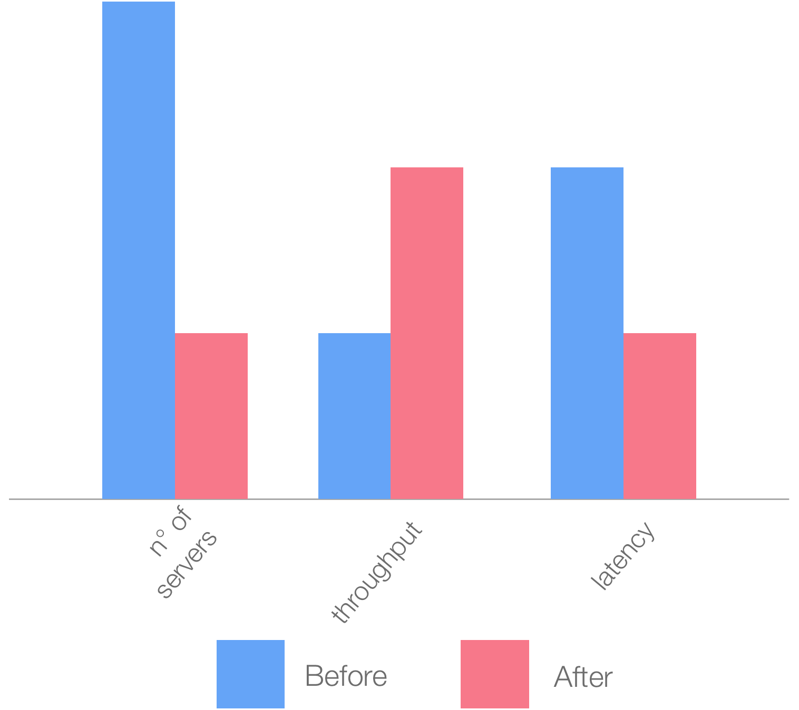
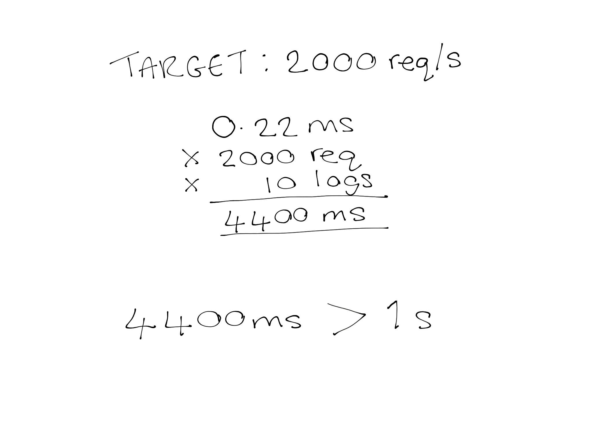
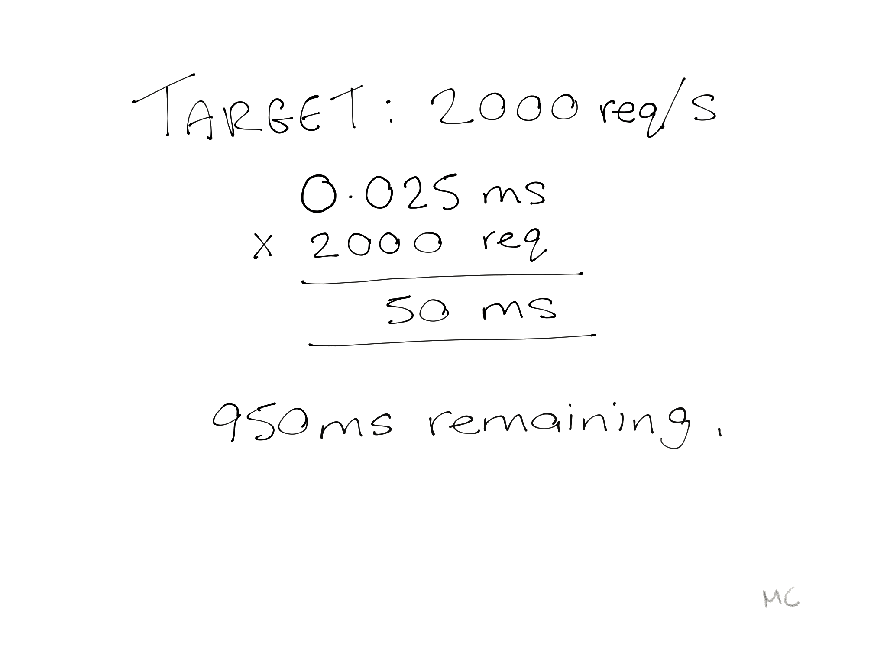
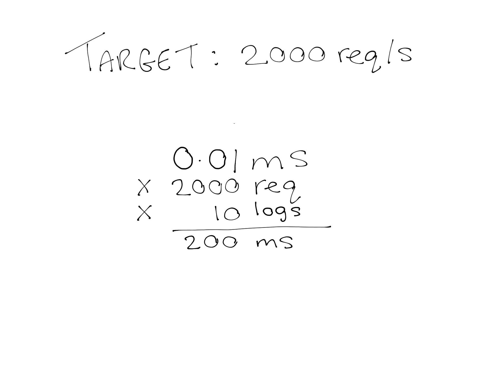
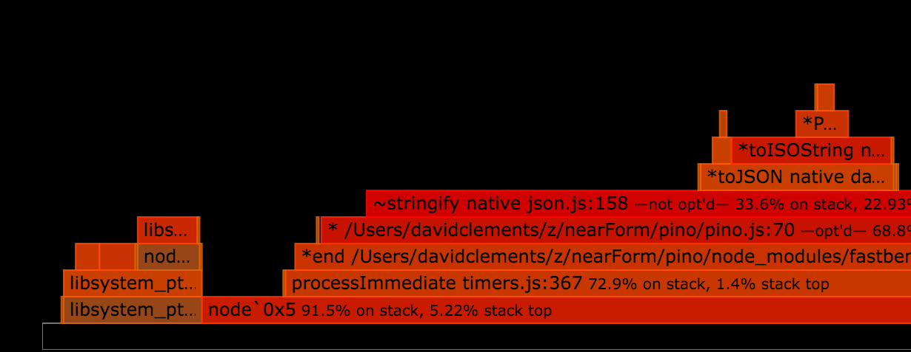

Our story begins in London
NET-A-PORTER
&
MR-PORTER
http://www.nearform.com/nodecrunch/client-case-study-net-a-porter
Results

Observation
Disabling logging
increased throughput

The more you log the better

Perceived time spent
logging a line
0 ms
Actual time spent
logging a line
0.22 ms
One Log Per Request

Ten Logs Per Request
Why so slow?
Adapters
of adapters
of adapters
of adapters
of adapters
of adapters
Idea
Let's write a fast logger!

We
♥
JSON \n
const split = require('split2')
process.stdin.pipe(split(JSON.parse))
.on('data', (obj) => {
console.log(Object.keys(obj))
})Pino
Bunyan API
const pino = require('pino')()
pino.info('hello world')
pino.debug({
big: 'object'
}, 'with message')
Pino
10000 ops — 250ms
One Log Per Request
Ten Logs Per Request


Extreme Mode
We can go faster
Extreme Mode
10000 logs in 100ms
2x throughput increase
Ten Logs Per Request
Extreme Mode
Trade-off: 4k batching
const pino = require('pino')({
extreme: true
})
pino.info('hello world')
pino.debug({
big: 'object'
}, 'with message')
Server Integration
Express
$ npm install express-pino-logger
var app = require('express')()
var pino = require('express-pino-logger')()
app.use(pino)
app.get('/', function (req, res) {
req.log.info('something else')
res.send('hello world')
})
app.listen(3000)
Hapi
$ npm install hapi-pino
const Hapi = require('hapi')
const server = new Hapi.Server()
server.connection({
host: 'localhost',
port: 3000
})
Hapi
$ npm install hapi-pino
server.register({
register: require('hapi-pino').register
}, (err) => {
if (err) { return console.error(err) }
server.logger().info('log from server instance')
server.start()
})
Hapi
$ npm install hapi-pino
server.route({
method: 'GET',
path: '/',
handler: function (request, reply) {
request.log(['a', 'b'], 'Request into hello world')
request.logger.info('In handler %s', request.path)
return reply('hello world')
}
})
Restify
$ npm install restify-pino-logger
var restify = require('restify')
var server = restify.createServer({name: 'app'})
server.use(require('restify-pino-logger')())
server.get('/', function (req, res) {
req.log.info('something else')
res.send('hello world')
})
server.listen(3000)
Koa
$ npm install koa-pino-logger
var Koa = require('koa')
var logger = require('koa-pino-logger')
var app = new Koa()
app.use(logger())
app.use((ctx) => {
ctx.log.info('something else')
ctx.body = 'hello world'
})
app.listen(3000)
http
$ npm install pino-http
var http = require('http')
var server = http.createServer(handle)
var logger = require('pino-http')()
function handle (req, res) {
logger(req, res)
req.log.info('something else')
res.end('hello world')
}
server.listen(3000)
Secret Sauce(s)
Secret Sauce
Avoid JSON.stringify
Secret Sauce
Date.now()
vs
new Date().toISOString()
Secret Sauce
%FlattenString
$ npm install flatstr
module.exports = function flatstr (s) {
Number(s)
return s
}
Secret Sauce
fast-safe-stringify
$ npm install fast-safe-stringify
function Circle (val, k, parent) {
this.val = val
this.k = k
this.parent = parent
}
Circle.prototype.toJSON = function toJSON () {
this.parent[this.k] = this.val
return '[Circular]'
}
Secret Sauce
quick-format
$ npm install quick-format
Tools
of the Trade
Flamegraphs
0x
$ npm install 0x

https://github.com/mcollina/pino/pull/2
Before
After


HTTP load tester
Trival cross platform installation
Generates 10% more load than alternatives in C
0x + autocannon = 👌
Demo
Pino is more than module
Pino is a way of life
Pino Philosophy
Absolute minimum overhead
Pino Philosophy
Rotate your logs yourself!
Pino Philosophy
Want better readability? Post-process
With pino CLI
Pino Philosophy
Transports are separate processes
Demo: ELK Integration
Ecosystem Impact
This presentation
http://github.com/mcollina
http://github.com/davidmarkclements
Thanks!